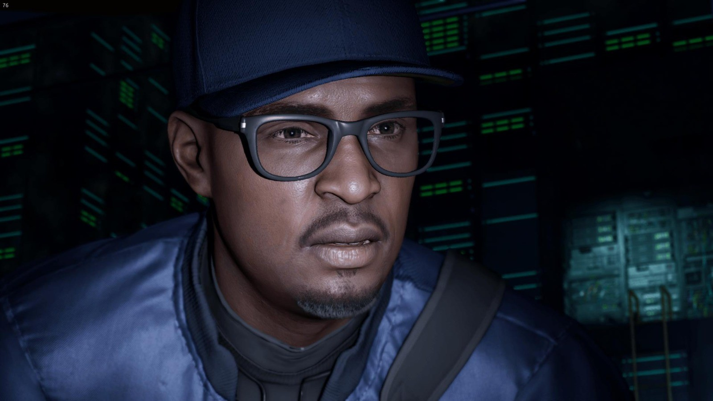
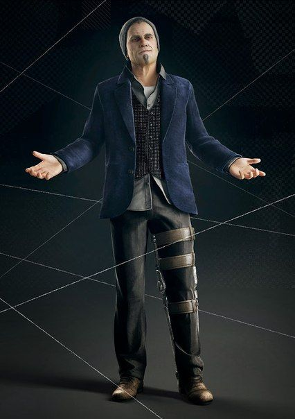
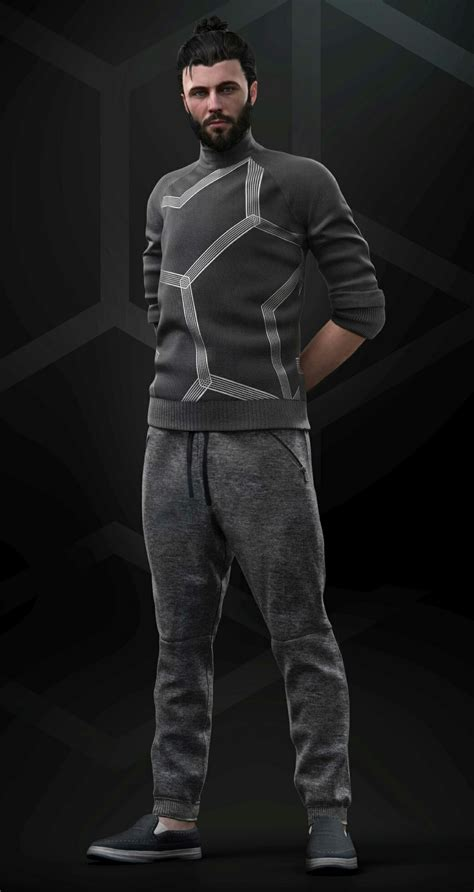
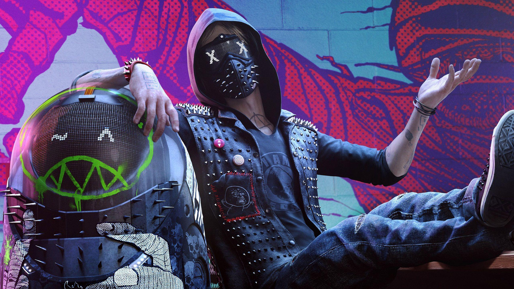
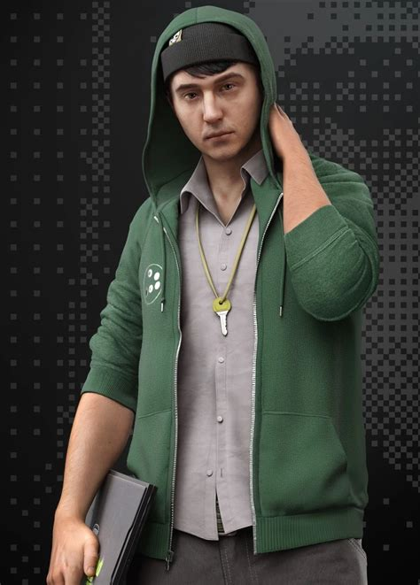
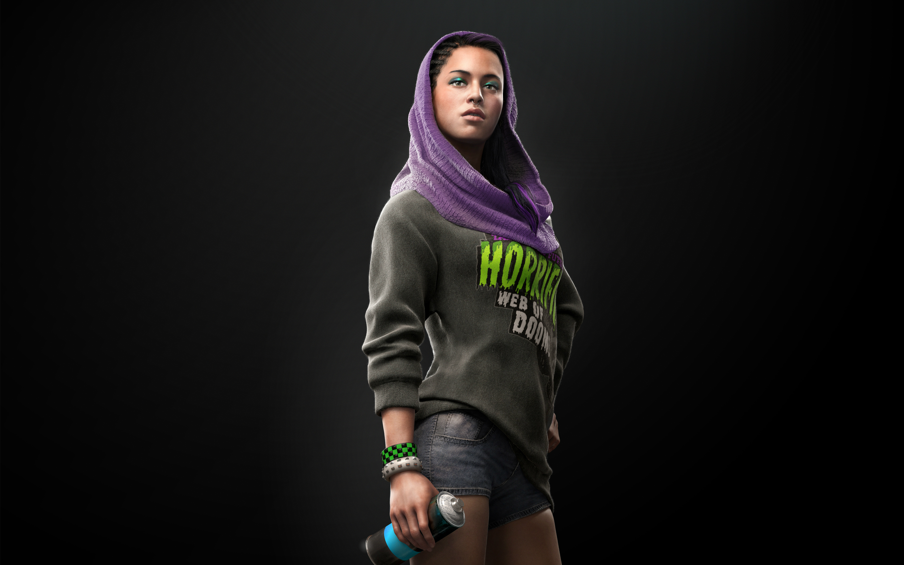
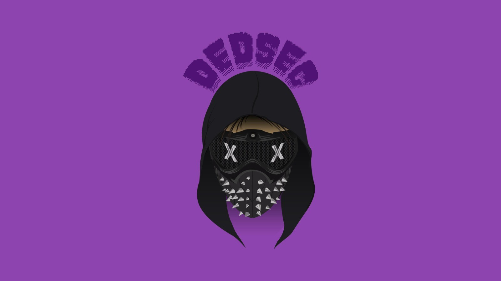
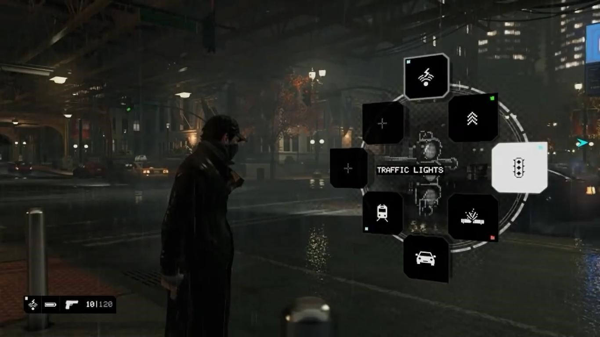
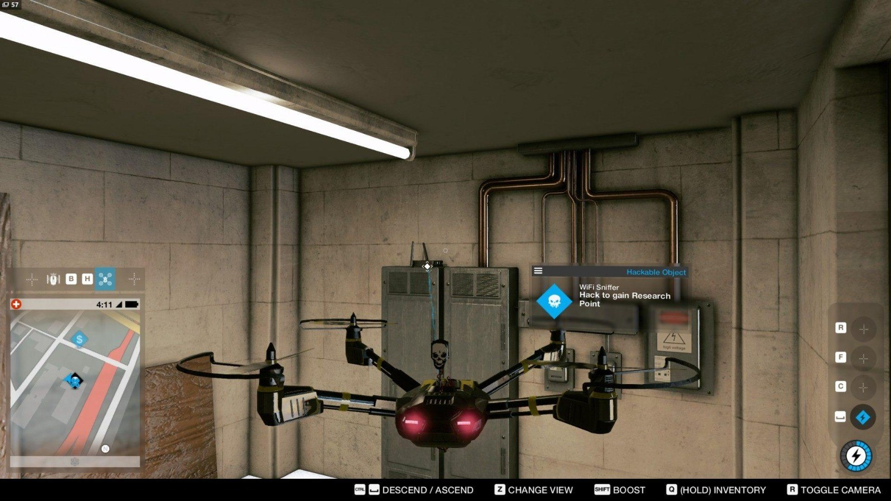
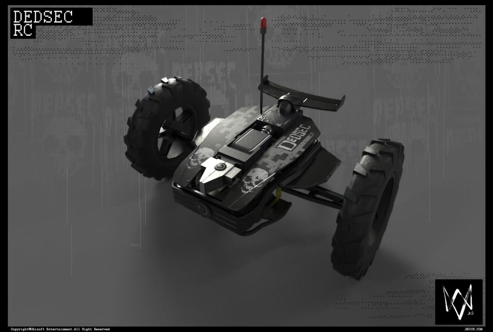

Sobre
Watch Dogs é uma série de jogos de ação e aventura em mundo aberto que gira em torno de tecnologia, hackers e vigilância digital. O jogador controla personagens que usam habilidades de invasão para interagir com sistemas eletrônicos, como câmeras, semáforos, celulares e outros dispositivos. A história mostra um mundo onde a tecnologia está cada vez mais presente na vida das pessoas, levantando questões sobre privacidade, controle de dados e segurança digital. Além das missões principais, os jogos permitem explorar grandes cidades e realizar diversas atividades.
Marcus Holloway

Marcus Holloway é um hacker talentoso da DedSec que luta contra o controle excessivo da tecnologia e a invasão da privacidade, usando hackeamento para enfrentar inimigos e proteger a população.
Personagens

Damien Brenks é um dos principais antagonistas de Watch Dogs. Ele foi parceiro de Aiden Pearce e também é um hacker experiente. Após uma tentativa de invasão que dá errado, Damien passa a buscar informações e poder, usando Aiden para alcançar seus objetivos. Ao longo da história, sua relação com Aiden se torna cada vez mais conflituosa.

Dusan Nemec é o principal vilão de Watch Dogs 2 e CEO da Blume, empresa responsável pelo ctOS 2.0. Ele é um empresário muito inteligente e usa a tecnologia para aumentar o poder e a influência da empresa. Dusan controla grandes quantidades de dados dos usuários e acredita que essas informações podem ser usadas para prever e influenciar o comportamento das pessoas. Por isso, ele entra em conflito com Marcus e a DedSec, que tentam expor os abusos da Blume e impedir que a tecnologia seja usada para controlar a sociedade.

Wrench é um dos principais integrantes da DedSec em Watch Dogs 2. Ele é um especialista em tecnologia e engenharia, conhecido por sua máscara com olhos digitais e seu comportamento divertido e irreverente. Ajuda Marcus em várias operações contra a Blume e o sistema ctOS 2.0

Josh Sauchak é um integrante da DedSec em Watch Dogs 2. Ele é um programador e especialista em tecnologia, responsável por analisar sistemas e desenvolver soluções para as operações do grupo. Josh é mais reservado e focado, complementando a equipe com suas habilidades técnicas.

Sitara Dhawan é uma das principais integrantes da DedSec em Watch Dogs 2. Ela é responsável pela arte, comunicação e propaganda do grupo, ajudando a expor as ações da Blume e do ctOS. Sitara também participa diretamente das operações ao lado de Marcus e dos outros membros da equipe.
DedSec

A DedSec é um grupo de hackers que usa a tecnologia para expor corrupção, proteger a privacidade digital e combater o controle excessivo exercido pelo sistema ctOS e por grandes empresas.
ctOS

O ctOS é um sistema inteligente que controla a infraestrutura da cidade e coleta informações dos cidadãos. Em Watch Dogs, os hackers usam o ctOS para invadir sistemas, acessar dispositivos e realizar hackeamentos durante as missões.
Drone Watch Dogs 2

O Drone é um equipamento aéreo da DedSec usado para reconhecimento, invasão de sistemas e distração de inimigos. Ele voa por diferentes ambientes, acessa câmeras e dispositivos eletrônicos e ajuda Marcus a completar objetivos de forma furtiva.
Carrinho

O RC Jumper é um robô de quatro rodas da DedSec que entra por espaços apertados, hackeia terminais, ativa dispositivos e ajuda Marcus a completar missões de forma furtiva e segura.